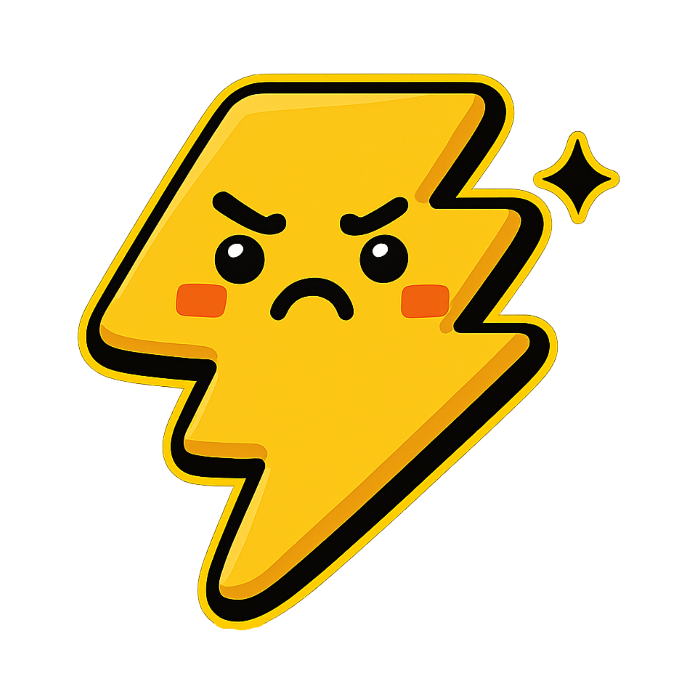
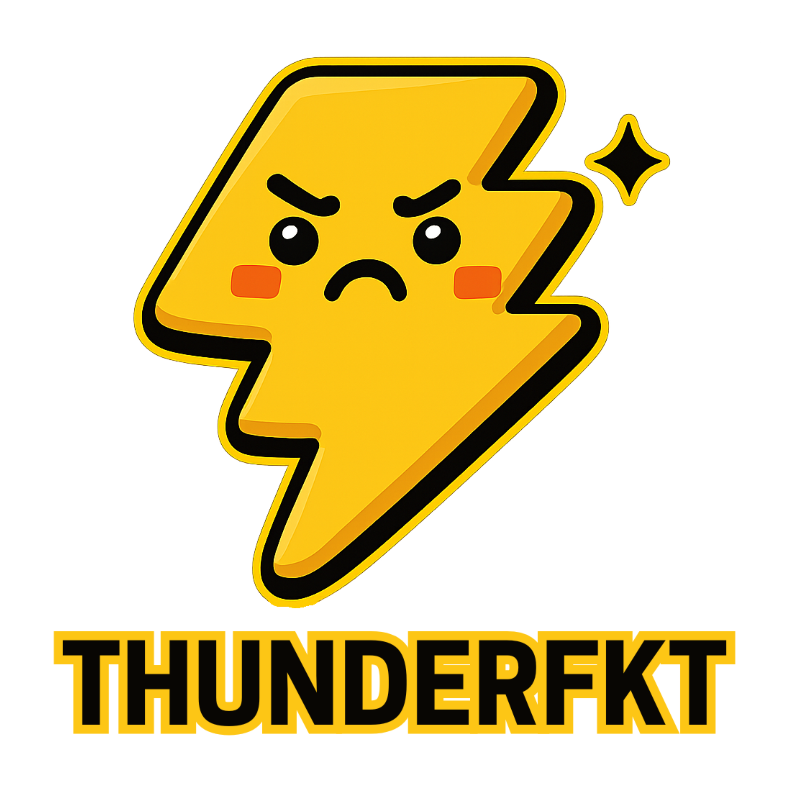

Bruh... if you on this page, your already in too deep.
No cap - this ain't no brand, no promo, no "like & subscribe" sh*t
This the vibe when life static loud and you still move through it smooth.
I ain't here to sell you nothin'. I ain't tryna look official.
We f*ck around heavy over here — chaos, memes, awkward moments, real energy.
We out here creatin a whole new word for the English dictionary.
You ain't gotta ask what it means. You've felt it.
Thunderfkt is a whole mood, a whole moment, a whole situation.
So welcome. Or whatever.
You clicked the wrong link but ended up in the right place.
We on. Stay Thunderfkt.
And yo — if you feelin' the vibez and wanna rock it on your back, I got you fam.

We built different — awkward on purpose, chaos by default, funny without tryin'.

/thun·der·fuhkt/
(past-tense verb, noun, adjective, exclamation)
1. Caught up in a wild, awkward, chaotic, or hilarious situation — usually outta nowhere.
> "Yo I got thunderfkt at the drive-thru — dropped my phone, got charged twice, and still forgot the fries."
"Shorty really thunderfkt herself showing up to the wrong party."
1. A person or moment that defines the chaos. The problem and the punchline.
> "He's the original thunderfkt — always in the mix, never on time."
"You see that video? That's a whole thunderfkt."
1. Describes something that's hilariously messed up or offbeat in the best/worst way.
> "This whole plan is thunderfkt, but we movin'."
"Thunderfkt energy all over this squad."
1. A loud reaction to a WTF moment, like a verbal meme.
> "Thunderfkt!"
"Nahhh that was thunderfkt as hell."
Thunderfk (base word)
> "Don't be a thunderfk today."
"That's just how thunderfkt life gets sometimes."
Thunderfkn (vibe-friendly / filter-dodging / smooth)
> "We on that thunderfkn timing now."
"Thunderfkn classic move right there."
---This ain't about being perfect.
This about ownin' the imperfect.
It's jokes, it's truth, it's chaos, it's culture.
Thunderfkt is for the loud, the lost, the legends.
If you ever been caught slippin' and laughed anyway — welcome home.
This ain't just a word we made up — it's a whole reaction that turned into a movement.
The mascot? Yeah, he's him — the OG thunderfk.
Caught in storms, always loud, never on time, but forever iconic.
Thunderfkt came from the streets, the memes, the DMs, the group chats, the clips that never made the feed — but stayed in your head.